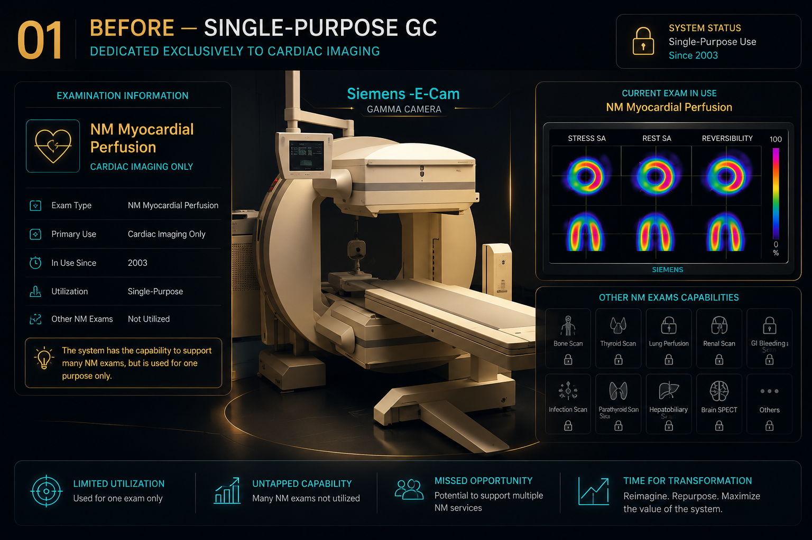
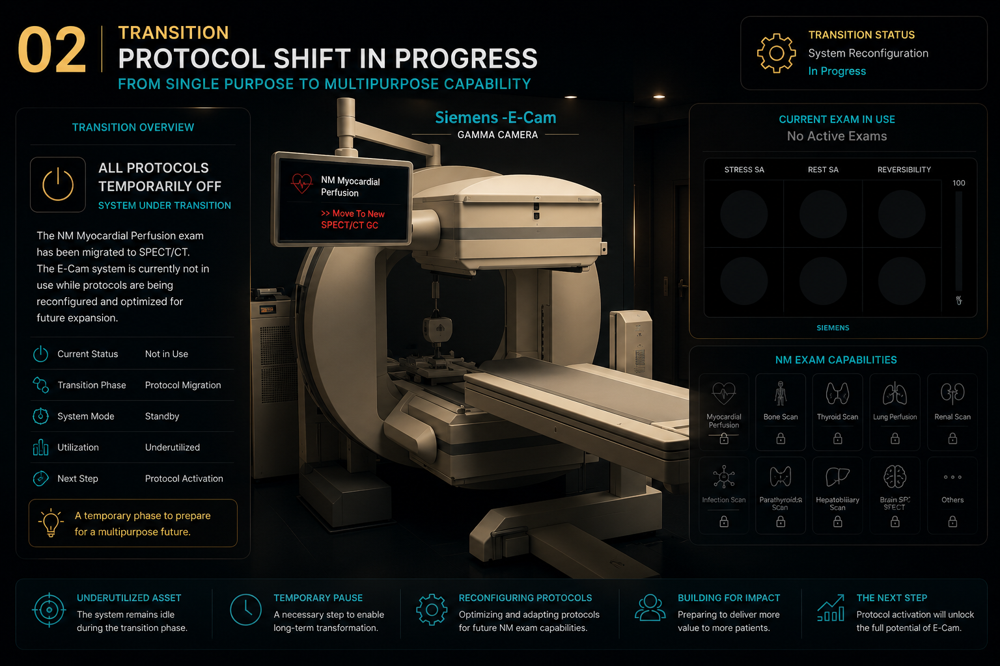
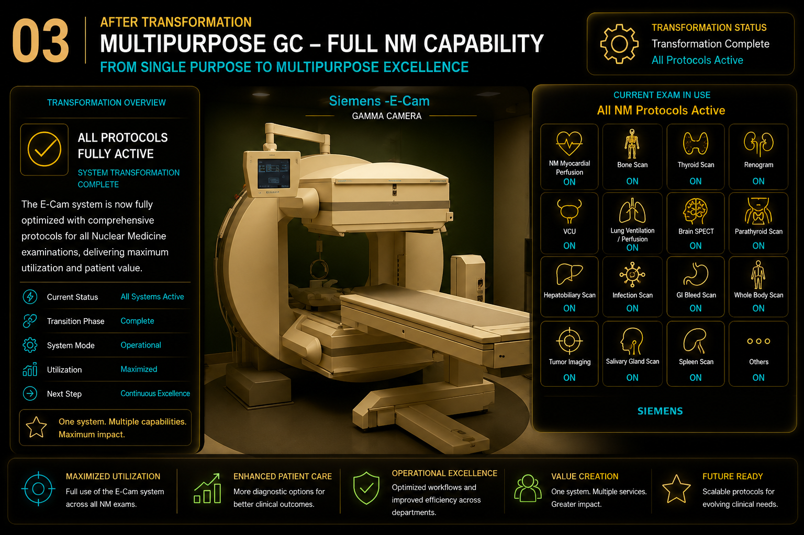

01Cardiac Only
A Single-Purpose Workflow
The Siemens E-Cam had been used exclusively for NM Myocardial Perfusion since its installation.
One System • One Exam
Cardiac imaging only.

View full size
 Project2017
Project2017
Clinical System Transformation
Transforming the Siemens E-Cam into a fully utilized Nuclear Medicine system.
01Cardiac Only
The Siemens E-Cam had been used exclusively for NM Myocardial Perfusion since its installation.
Cardiac imaging only.

View full size02The Transition — GC Off
NM Myocardial Perfusion was transferred to the new SPECT/CT, leaving the E-Cam without an active clinical workload.
An underutilized asset became an opportunity.

View full size03The Transformation
I reviewed, created, and optimized the required protocols, then introduced the E-Cam into routine use across Nuclear Medicine examinations.
From cardiac-only to multipurpose clinical use.

View full sizeImpact
Existing asset returned to full clinical use.
More NM examinations supported.
Greater flexibility across imaging systems.
Expanded workflows integrated into routine practice.
The Result
Siemens E-Cam Single-Purpose → Multipurpose